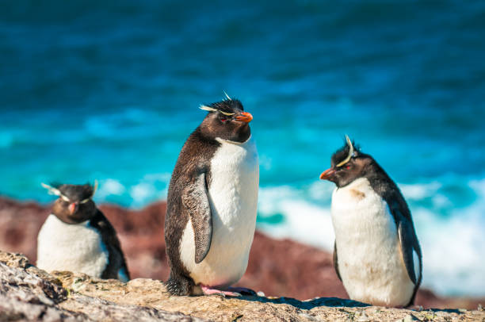

Species Overview

The rockhopper penguins (Eudyptes chrysocome) are flightless marine birds, popularly known for their distinctive appearance, characterised by a yellow crest of feathers. The name “rockhoppers” signifies the nature of these penguins to hop from rock to rock in their home territory on the craggy island shorelines of North America instead of waddling like other penguin species (Calgary Zoo, 2024).
Scientific Name
Eudyptes chrysocome
Natural Habitat

The species predominantly inhabits the rocky shorelines across sub-Antarctic regions.
Maintenance and monitoring under captive settings

The tracking of food intake is one of the key responsibilities of the zookeepers in order to facilitate the overall well-being and provide dietary supplements to the penguins. Rockhopper penguins have been fed with frozen whole fish in order to get a nutritious meal rich in energy (Maganhe, 2024). Oxidation of lipids in frozen conditions results in loss of different lipid-soluble vitamins, including A, D, and E. Similarly, hydrolysis results in loss of vitamin B1 from frozen fish, requiring supplementation of the micronutrients (Gimmel et al., 2022). Additionally, the zookeepers should also weigh the food daily in order to control the amount of food consumed by the penguins. The penguins generally refuse to eat when their energy levels reach a satisfactory level, even though the nutritional needs might not be met (Maganhe, 2024). Tracking of leftovers becomes necessary as penguins adapt their food intake depending on internal and external factors (Kim et al., 2024). Furthermore, assessing the body condition serves as an essential factor in successful feeding because the penguins maintain their caloric intake in relation to their physiological requirements, especially during the breeding period, by regulating their diet based on their body weight and condition (Kim et al., 2024). Therefore, the evaluation of the physical and physiological requirements of the captive penguins becomes the key role of the aquarium staff.
| Category | Details |
|---|---|
| IUCN Red List Status | Endangered (at the brink of extinction) |
| Type | Bird |
| Habitat | The islands of Tristan da Cunha and Gough are located in the Atlantic Ocean |
| Diet | Carnivore (fish, squid, and krill) |
| Size | 55 cm |
| Weight | 1.99–2.99 kg |
| Behaviour | Socially engaging grooming behaviour, allo-preening |